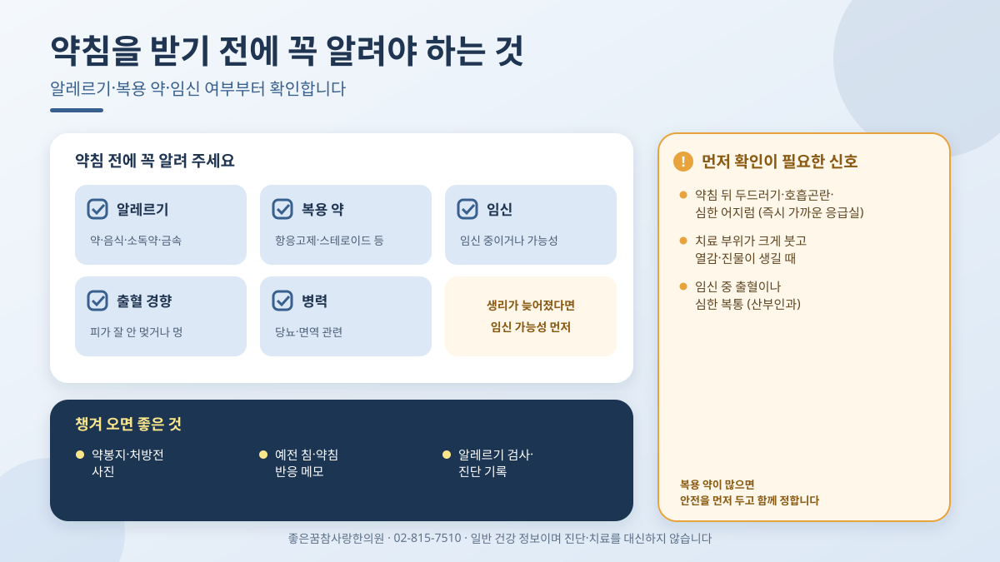

이종호 한의사 감수좋은꿈참사랑한의원 대표원장 (한의사 면허번호 19769)발행 2026-11-23 · 수정 2026-11-26
이 글의 차례
- 왜 미리 알려야 하나요
- 알레르기 경험은 어떻게 말씀해 주시면 좋을까요?
- 왜 영양제와 건강식품까지 여쭙나요
- 지난번과 달라진 점은 무엇을 알려 주시면 되나요?
- 말하기 어려운 이야기도 괜찮습니다
- 임신을 준비하거나 수유 중인 분은 어떻게 하나요?
- 한 장으로 정리해 오시면 편합니다
- 자주 하는 오해
- 예를 들면 이런 경우입니다
- 왜 피를 묽게 하는 약은 이름까지 여쭙나요
- 당뇨나 면역 관련 질환은 왜 중요할까요?
- 그날 몸 상태도 알려 주세요
- 먼저 이렇게 여쭙니다
- 일상에서 먼저 해 볼 수 있는 것
- 기억이 나지 않는 정보는 어떻게 하나요?
- 알려 주신 내용은 어떻게 쓰이나요?
- 스스로 점검해 보세요
- 한의원에서 함께 살필 수 있는 경우
- 약침 뒤에는 이렇게 지켜보세요
- 왜 이전 약침 경험을 자세히 여쭙나요
- 가족이 대신 알려 주셔도 됩니다
- 이렇게 기록해 오시면 상담이 쉬워집니다
- 이런 증상은 먼저 확인이 필요합니다
- 알려 주시는 것이 번거롭게 느껴진다면
- 함께 읽으면 좋은 글
약침을 받기 전에는 알레르기와 약물 이상 반응 경험, 복용 중인 약, 임신 여부, 피가 잘 멎지 않는 경향, 당뇨나 면역 관련 병력을 꼭 알려 주셔야 합니다. 약침은 약액을 쓰는 치료라서 이런 정보가 안전한 방법을 정하는 기준이 되기 때문입니다. 약봉지 사진 한 장이면 충분하니 부담 갖지 않으셔도 됩니다.
왜 미리 알려야 하나요
- 알레르기 경험이 있으면 약액에 대한 반응을 더 신중하게 살펴야 합니다.
- 항응고제나 항혈소판제를 드시면 멍이나 출혈이 생기기 쉬워 방법을 조정해야 할 수 있습니다.
- 임신 중에는 쓰지 않거나 조심해야 하는 치료가 있습니다.
- 당뇨나 면역 관련 병력이 있으면 치료 부위의 상태를 더 세심하게 살핍니다.
알레르기 경험은 어떻게 말씀해 주시면 좋을까요?
"알레르기가 있어요"라는 말만으로는 판단하기 어렵습니다. 무엇에, 어떤 반응이, 얼마나 지나서 나타났는지를 알려 주시면 약침을 할지, 한다면 어떻게 준비할지 정하기가 훨씬 쉬워집니다.
- 무엇에: 특정 약 이름, 음식, 소독약, 반창고, 금속 장신구 등
- 어떤 반응: 가려움, 두드러기, 붓기, 피부가 붉어짐, 숨이 답답함 등
- 언제: 닿거나 먹은 직후인지, 몇 시간 뒤인지, 다음 날인지
- 어떻게 지나갔는지: 저절로 가라앉았는지, 병원 치료를 받았는지
기억이 정확하지 않아도 괜찮습니다. "어릴 때 어떤 주사를 맞고 크게 부었다고 들었다"처럼 어렴풋한 이야기도 알려 주세요.
왜 영양제와 건강식품까지 여쭙나요
영양제나 건강식품은 약이 아니라고 생각해 빠뜨리기 쉽습니다. 그런데 일부는 피가 멎는 데 영향을 줄 수 있다고 알려져 있어, 시술 뒤 멍이 드는 정도와 관련이 있을 수 있습니다.
그래서 저는 매일 챙겨 드시는 것이 있다면 이름을 모두 여쭙니다. 이름이 기억나지 않으면 통이나 포장 사진을 보여 주셔도 됩니다. 판단은 제가 할 테니, 고르지 말고 다 알려 주시는 것이 가장 좋습니다.
지난번과 달라진 점은 무엇을 알려 주시면 되나요?
약침을 여러 번 받는 동안에도 몸 상태는 달라집니다. 매번 처음처럼 다 다시 말씀하실 필요는 없지만, 지난 진료 뒤로 바뀐 것이 있다면 시술 전에 꼭 짚어 주세요.
- 새로 먹기 시작했거나 끊은 약, 용량이 바뀐 약
- 다른 병원에서 받은 검사 결과나 새로 진단받은 질환
- 최근 받은 수술이나 시술, 치과 치료
- 임신 계획이 생겼거나 생리가 늦어진 경우
- 지난번 약침 뒤 시술 부위에 있었던 반응
말하기 어려운 이야기도 괜찮습니다
임신 가능성이나 피부 질환, 정신건강과 관련된 약처럼 진료실에서 꺼내기 어려운 이야기도 있습니다. 하지만 이런 정보가 빠지면 약침을 해도 되는지 판단하기 어려워집니다.
들은 이야기는 진료에만 쓰고, 말씀하신 범위 안에서만 다룹니다. 직접 말하기가 불편하시면 메모로 적어 건네주셔도 됩니다. 저는 그 내용을 보고 필요한 것만 조용히 여쭙겠습니다.
임신을 준비하거나 수유 중인 분은 어떻게 하나요?
임신을 준비 중이라면 마지막 생리 시작일과 계획을 알려 주세요. 임신 가능성이 있는 시기에는 약침을 미루거나 부위와 방법을 바꾸는 쪽으로 함께 정합니다. 임신 중이라면 먼저 말씀해 주시고, 다니시는 산부인과와도 상의해 주세요.
수유 중인 분도 그 사실을 알려 주세요. 시술 부위와 약침 종류를 고를 때 함께 고려합니다.
한 장으로 정리해 오시면 편합니다
휴대전화 메모에 아래처럼 정리해 두시면 다음에도 그대로 보여 주실 수 있습니다.
- 지금 먹는 약과 영양제(이름과 하루 몇 번)
- 알레르기: 무엇에, 어떤 반응
- 진단받은 질환과 수술 이력
- 마지막 생리 시작일(해당되는 경우)
- 이전 약침이나 주사 뒤의 반응
자주 하는 오해
- 약침은 침과 같으니 따로 알릴 것이 없다고 여기기 쉽지만, 약액을 쓰는 치료라 알레르기와 복용 약을 더 꼼꼼히 확인합니다.
- 영양제나 한약은 약이 아니라서 말하지 않아도 된다고 생각하기 쉽지만, 함께 알려 주시면 겹치는 부분을 확인하는 데 도움이 됩니다.
- 예전에 약침을 맞고 괜찮았으니 이번에도 같다고 여기기 쉽지만, 그사이 새로 먹기 시작한 약이나 임신 가능성이 생겼다면 다시 알려 주셔야 합니다.
예를 들면 이런 경우입니다
- 예를 들어 혈압약과 함께 피를 묽게 하는 약을 먹는 어르신이라면, 약 이름을 먼저 확인하고 멍과 출혈 가능성을 고려해 약침을 할지, 다른 방법을 먼저 할지 함께 정합니다.
- 예를 들어 임신을 준비 중인 직장인이 어깨 통증으로 약침 상담을 원한다면, 마지막 생리 시작일과 임신 가능성을 먼저 여쭙고 그에 맞춰 방법을 고릅니다.
- 예를 들어 예전에 소독약이나 반창고에 피부가 붉어진 적이 있는 분이라면, 그 경험을 미리 말씀해 주셔야 시술 준비 과정을 조정할 수 있습니다.
왜 피를 묽게 하는 약은 이름까지 여쭙나요
"혈액순환 약을 먹어요"라는 말은 여러 종류의 약을 뜻할 수 있습니다. 같은 이름처럼 들려도 피가 멎는 데 영향을 크게 주는 약이 있고, 그렇지 않은 약도 있습니다. 그래서 저는 정확한 약 이름이나 약 봉투를 보고 싶어 합니다.
이런 약을 드시는 분도 약침을 받을 수 있는 경우가 있지만, 부위와 깊이, 바늘 수를 줄이고 시술 뒤 지혈을 더 오래 확인합니다. 약은 처방한 의사와 상의 없이 줄이거나 쉬지 말고 그대로 드시면서 알려 주세요.
당뇨나 면역 관련 질환은 왜 중요할까요?
혈당 조절이 어렵거나 면역을 낮추는 약을 드시는 분은 피부의 작은 상처도 아무는 데 시간이 더 걸릴 수 있습니다. 그래서 시술 부위를 더 꼼꼼히 소독하고, 시술 뒤 며칠 동안 그 자리가 어떤지 더 세심하게 여쭙니다.
최근 혈당 수치나 병원에서 들은 내용이 있다면 함께 알려 주세요. 약침을 할지, 한다면 어떤 부위를 피할지 정하는 데 참고합니다.
그날 몸 상태도 알려 주세요
알레르기나 지병처럼 오래된 정보 말고도, 그날의 컨디션이 약침을 정하는 데 영향을 줍니다. 아래에 해당한다면 진료실에 들어오시며 먼저 말씀해 주세요.
- 오늘 끼니를 오래 걸렀거나 잠을 거의 못 잤다
- 열이 나거나 목이 아프고 몸살 기운이 있다
- 시술 부위 근처 피부에 상처나 뾰루지가 있다
- 오늘 이미 다른 곳에서 주사나 시술을 받았다
이런 날에는 약침을 다음으로 미루고 침이나 다른 방법으로 진행하기도 합니다.
먼저 이렇게 여쭙니다
- 약이나 음식, 소독약, 금속 등에서 알레르기 반응이 있었던 경험
- 복용 중인 약 목록(항응고제, 항혈소판제, 스테로이드 포함 여부)
- 임신 중이거나 임신 가능성이 있는지
- 피가 잘 멎지 않거나 멍이 쉽게 드는 경향
- 당뇨, 간·신장 질환, 면역과 관련된 병력
일상에서 먼저 해 볼 수 있는 것
- 복용 약은 약봉지나 처방전을 사진으로 찍어 오기
- 이전 침이나 약침에서 있었던 반응을 기억나는 대로 적기
- 알레르기 검사나 진단서가 있다면 함께 가져오기
- 생리가 늦어졌다면 임신 가능성을 먼저 말하기
- 약침 종류나 비용, 보험이 궁금하다면 방문 전 전화(02-815-7510)로 확인하기
- 시술 부위를 드러내기 쉬운 옷을 입고 오기
기억이 나지 않는 정보는 어떻게 하나요?
약 이름이나 수술 연도가 정확히 기억나지 않아도 괜찮습니다. 약국에서 받은 봉투, 처방전, 병원 앱의 처방 기록, 가족에게 물어본 내용 가운데 확인할 수 있는 것을 가져오시면 됩니다.
어르신을 모시고 오는 보호자께서는 평소 드시는 약을 봉투째 챙겨 오시면 가장 정확합니다. 약을 여러 병원에서 받으신다면 병원마다 받은 약을 모두 보여 주세요. 겹치거나 빠진 것이 있는지 함께 볼 수 있습니다.
알려 주신 내용은 어떻게 쓰이나요?
알려 주신 정보를 바탕으로 약침을 할지, 한다면 어느 부위에 어떤 종류를 얼마나 쓸지, 시술 뒤 무엇을 더 살필지를 정합니다. 해당하는 항목이 있다고 해서 바로 약침을 못 받는 것은 아니고, 방법을 조정할 수 있는지 먼저 생각합니다.
반대로 위험이 크다고 판단되면 그 이유를 설명드리고 침이나 추나, 온열 물리치료처럼 약액을 쓰지 않는 방법을 권합니다. 정보는 기록에 남겨 두어 다음 진료 때 다시 처음부터 말씀하지 않으셔도 되도록 합니다.
스스로 점검해 보세요
- 약, 음식, 소독약, 반창고 등에 알레르기 반응이 있었던 적이 있다
- 피를 묽게 하는 약(항응고제, 항혈소판제)을 먹고 있다
- 스테로이드나 면역과 관련된 약을 먹고 있다
- 당뇨나 간·신장 질환으로 치료받고 있다
- 임신 중이거나 임신 가능성이 있다
- 예전에 침이나 주사를 맞고 어지럽거나 크게 부은 적이 있다
- 최근 새로 먹기 시작한 약이나 영양제가 있다
하나라도 해당한다면 약침을 받기 전에 먼저 말씀해 주세요.
한의원에서 함께 살필 수 있는 경우
- 알레르기 병력이 있을 때 약침을 받을지 다른 방법을 선택할지 함께 상의합니다.
- 복용 약이 많을 때 안전을 우선해 치료 방법을 함께 정합니다.
- 치료가 처음이라 걱정이 클 때 과정과 예상 반응을 충분히 듣고 결정합니다.
좋은꿈참사랑한의원에서는 알려 주신 정보를 먼저 확인하고, 필요하다고 판단될 때만 약침의 위치와 방법을 정해 진행합니다. 해당 사항이 있으면 침이나 다른 방법을 먼저 권할 수 있으며, 치료 뒤 지켜볼 점을 귀가 전에 알려 드립니다.
첫 방문에는 원장이 모든 분께 맥부터 짚으며 불편한 부위와 경위, 알레르기와 복용 약을 여쭙습니다. 부위의 깊이와 구조에 따라 필요하다고 판단되면 초음파로 근육과 힘줄, 주변 구조를 확인합니다. 잠과 소화, 생활 기록을 함께 본 뒤 약침을 할지, 한다면 어느 부위에 왜 하는지를 설명해 드리고 동의를 받은 뒤 진행합니다.
약침 뒤에는 이렇게 지켜보세요
- 시술 부위의 뻐근함이나 작은 멍은 대개 며칠 안에 옅어지는 경우가 많습니다.
- 뻐근함이나 멍이 2~3일이 지나도 옅어지지 않거나 점점 심해진다면 전화(02-815-7510)로 알려 주세요.
왜 이전 약침 경험을 자세히 여쭙나요
예전에 다른 곳에서 약침을 받아 보셨다면, 그때 어떤 부위에 받았는지, 받은 뒤 붓거나 가려운 반응이 있었는지가 이번 계획을 세우는 데 좋은 참고가 됩니다. 약침의 종류 이름을 기억하지 못하셔도 괜찮습니다.
"그때 받은 뒤 이틀 정도 묵직했다", "받은 자리가 하루 동안 가려웠다"처럼 느낌만 말씀해 주셔도 충분합니다. 반응이 있었다면 이번에는 양을 줄이거나 다른 종류를 고르고, 시술 뒤 확인 시간을 더 길게 잡습니다.
가족이 대신 알려 주셔도 됩니다
어르신이나 아이가 약침 상담을 받는 경우, 평소 상태를 가장 잘 아는 보호자께서 함께 오셔서 알려 주시면 큰 도움이 됩니다. 본인이 기억하지 못하는 알레르기나 예전 반응을 보호자께서 기억하시는 경우가 많기 때문입니다.
이렇게 기록해 오시면 상담이 쉬워집니다
- 알레르기 원인과 그때 나타난 반응
- 복용 중인 약과 영양제의 이름, 양
- 마지막 생리 시작일(해당되는 경우)
- 최근 혈액검사나 병원 진단 내용
- 예전에 약침이나 주사를 맞은 부위와 그 뒤의 반응(멍, 붓기, 가려움 등)
- 최근 다른 병원에서 받은 주사 치료가 있다면 날짜와 부위
알려 주신 내용 가운데 다른 병원 진료가 먼저 필요해 보이는 부분이 있다면, 그 점도 솔직하게 말씀드리고 약침은 그 뒤로 미루도록 안내합니다. 이때도 그동안 할 수 있는 다른 치료를 함께 상의합니다.
이런 증상은 먼저 확인이 필요합니다
- 약침 뒤 두드러기, 입술·눈 붓기, 숨 가쁨, 심한 어지럼이 있는 경우
- 치료 부위가 점점 붓거나 열감이 심해지는 경우, 진물이 나는 경우
이런 신호가 있으면 한의원보다 가까운 병원이나 응급실을 먼저 찾으세요.
알려 주시는 것이 번거롭게 느껴진다면
처음 오신 날 여러 가지를 여쭙다 보면 번거롭게 느끼실 수 있습니다. 하지만 이 몇 분의 확인이 약침을 안전하게 진행하기 위한 가장 기본적인 준비입니다. 한 번 기록해 두면 다음부터는 달라진 것만 확인하면 되니, 처음 한 번만 조금 시간을 내 주세요.
혹시 진료실에서 깜빡하고 말하지 못한 것이 있다면, 시술 전에 언제든 손을 들어 말씀해 주셔도 됩니다. 시술이 끝난 뒤 생각났다면 그때라도 꼭 알려 주세요.
함께 읽으면 좋은 글

여쭙는 것
- 약이나 음식, 소독약, 금속 등에서 알레르기 반응이 있었던 경험
- 복용 중인 약 목록(항응고제, 항혈소판제, 스테로이드 포함 여부)
- 임신 중이거나 임신 가능성이 있는지
생활에서 해 볼 것
- 복용 약은 약봉지나 처방전을 사진으로 찍어 오기
- 이전 침이나 약침에서 있었던 반응을 기억나는 대로 적기
- 알레르기 검사나 진단서가 있다면 함께 가져오기
한의원에서 함께 살필 것
- 알레르기 병력이 있을 때 약침을 받을지 다른 방법을 선택할지 함께 상의합니다.
- 복용 약이 많을 때 안전을 우선해 치료 방법을 함께 정합니다.
- 치료가 처음이라 걱정이 클 때 과정과 예상 반응을 충분히 듣고 결정합니다.
먼저 확인이 필요한 신호
- 약침 뒤 두드러기, 입술·눈 붓기, 숨 가쁨, 심한 어지럼이 있는 경우
- 치료 부위가 점점 붓거나 열감이 심해지는 경우, 진물이 나는 경우
한눈에 보는 표
| 구분 | 핵심 |
|---|---|
| 여쭙는 것 | 약이나 음식, 소독약, 금속 등에서 알레르기 반응이 있었던 경험 복용 중인 약 목록(항응고제, 항혈소판제, 스테로이드 포함 여부) |
| 생활에서 해 볼 것 | 복용 약은 약봉지나 처방전을 사진으로 찍어 오기 이전 침이나 약침에서 있었던 반응을 기억나는 대로 적기 |
| 한의원에서 함께 살필 것 | 알레르기 병력이 있을 때 약침을 받을지 다른 방법을 선택할지 함께 상의합니다. 복용 약이 많을 때 안전을 우선해 치료 방법을 함께 정합니다. |
| 먼저 확인이 필요한 신호 | 약침 뒤 두드러기, 입술·눈 붓기, 숨 가쁨, 심한 어지럼이 있는 경우 치료 부위가 점점 붓거나 열감이 심해지는 경우, 진물이 나는 경우 |
자주 묻는 질문
알레르기가 있으면 약침을 받을 수 없나요?
종류에 따라 다르며, 알려 주시면 안전한 방법을 함께 판단합니다.
임신 중에도 약침을 받을 수 있나요?
임신 중에는 신중하게 판단하므로 꼭 미리 알려 주세요.
약침 종류나 비용, 보험 적용은 어떻게 되나요?
상태와 부위에 따라 달라질 수 있습니다. 방문 전 전화(02-815-7510)로 확인해 주세요.
약침을 받기 전날이나 당일에 조심할 것이 있나요?
전날 잠을 충분히 자고, 당일에는 가볍게 식사하고 오시면 좋습니다. 감기 기운이나 열이 있다면 진료 전에 먼저 말씀해 주세요.
좋은꿈참사랑한의원은 재진 때 지난번 이야기부터 이어서 여쭙니다. 진료시간과 예약은 오시는 길에서 확인하세요.
어디서 상담받을 수 있나요?
좋은꿈참사랑한의원은 서울 동작구 만양로2길 2 신성빌딩 3층·5층(서울 동작구 상도동, 7호선 상도역 3번 출구 근처)에 있습니다. 한의사 3명(이종호 대표원장, 조영기 수석진료원장, 정원영 진료원장)이 진료합니다. 진료시간은 평일 09:30~20:00(점심 13:00~14:00), 토·일·공휴일 09:30~15:00이며, 방문 전 전화로 확인을 권합니다. 예약은 네이버 예약, 카카오톡 상담, 전화 02-815-7510로 받습니다.
이 글은 일반적인 건강 정보이며 개인의 진단이나 치료를 대신하지 않습니다. 증상이 있거나 복용 중인 약이 있다면 진료를 통해 확인하세요. 치료 효과는 개인마다 다를 수 있습니다.
작성 기준: 일반적으로 알려져 있는 건강 정보를 참고해 정리했습니다(대표원장 감수). 증상 기록은 1~2주 동안 하루 1회, 비슷한 시간에 적어 오시면 지난 상태와 비교하기 쉽습니다.